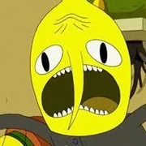
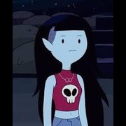
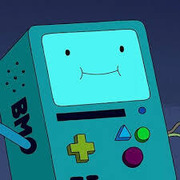
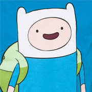
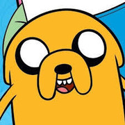

10 - Tree Trunks
Tree Trunks tem a personalidade de uma mulher sulista mais velha e gentil, com sotaque texano e uma disposição educada e elogiosa. Ela constantemente se coloca em situações perigosas - para grande aborrecimento de Finn - devido à sua ingenuidade. Ela costuma usar sua fofura para completar tarefas usando muita maquiagem e seduzindo seus súditos.

9- O Conde de Lemongrab
Esse personagem com cabeça de limão, a primeira criação da Princesa Bubblegum, é socialmente disfuncional e tem o hábito de gritar “INACEITAVELLLLL!!!!!!” diante de comportamentos felizes ou cômicos que ele considera, bem, inaceitáveis. Embora o conde fosse um antagonista em sua primeira aparição, ele não é mau, "apenas completamente desajustado à vida".

8 - Lady Rainicorn
Esta criatura majestosa que fala coreano tem uma personalidade gentil e adoravel. Sempre que ela aparece na tela com a turma é uma alegria assistir. Seu romance com Jake é inesquecível, definitivamente faz o coração sorrir.

7 - Lumpy Space Princess
Lumpy Space Princess age como uma adolescente malcriada, apática, atrevida, em busca de atenção e deliberadamente ignorante, mas ela tem tanta personalidade que você não pode deixar de amá-la. E, claro, seus belos caroços.

6 - Ice King
Simon Petrikov, anteriormente conhecido como Ice King é um personagem concebido para ser o principal antagonista de Adventure Time. Originalmente retratado como um vilão que sequestra princesas regularmente, a personalidade do personagem foi posteriormente expandida, revelando que ele era um adulto de bom coração, mas incompreendido, com sentidos e moral completamente distorcidos pela sua coroa, sofrendo de solidão e perda de memória.

5 - Marceline
Apesar de sua primeira aparição demonstrar uma natureza antagonista, com o passar da série a personagem se torna uma amiga próxima de Finn e Jake, e vai evoluindo sua personalidade e relacionamentos. Ao contrário dos vampiros convencionais, ela não precisa de sangue para viver, apenas se alimentando da cor vermelha. Ela também é uma grande cantora e compositora musical.

4 - Princess Bubblegum
Embora ela tenha um comportamento gentil, ela teve seu quinhão de drama com alguns dos personagens principais, especificamente com Finn e Marceline. Ela fará qualquer coisa para proteger seu reino, não importa o quão conspiratório seja. Isso a fez queimar pontes no passado, mas também gerou algumas das melhores histórias. São essas dificuldades que transformam a bondosa Princesa Jujuba em uma assassina fria ao tomar decisões difíceis ou com base no que ela acredita ser certo. Ela, como muitos outros neste programa, foi fundamental para a maturidade de Finn e também para a sua própria, descobrindo mais sobre si mesma e encontrando seu verdadeiro amor em Marceline.

3 - BMO
BMO possui uma personalidade e alegria contagiante, ele é bem extrovertido, sensível, carinhoso, amoroso e bem fofo. Hábitos: O BMO possui hábitos de humanos, como tomar café, escovar os dentes, lavar o rosto, dançar e etc.

2 - Finn
Finn, o Humano (Finn Mertens, nome completo, ou apenas Finn, anteriormente Pen, que é a abreviação do nome de Pendleton Ward, o criador de Hora de Aventura), é um dos personagens principais de Hora de Aventura. Junto a Jake, Finn vive procurando aventuras pela Terra de Ooo, salvando todas as pessoas de seres do mal.

1 - Jake
Jake (Jake, o Cão), é um dos principais protagonistas de Hora de Aventura. Ele é um cachorro mágico e Finn é seu companheiro constante, melhor amigo e irmão adotivo. Jake tem Poderes de Elasticidade, que lhe permitem esticar e manipular seu corpo, vindo a calhar em inúmeras ocasiões ao longo de sua aventuras com Finn.